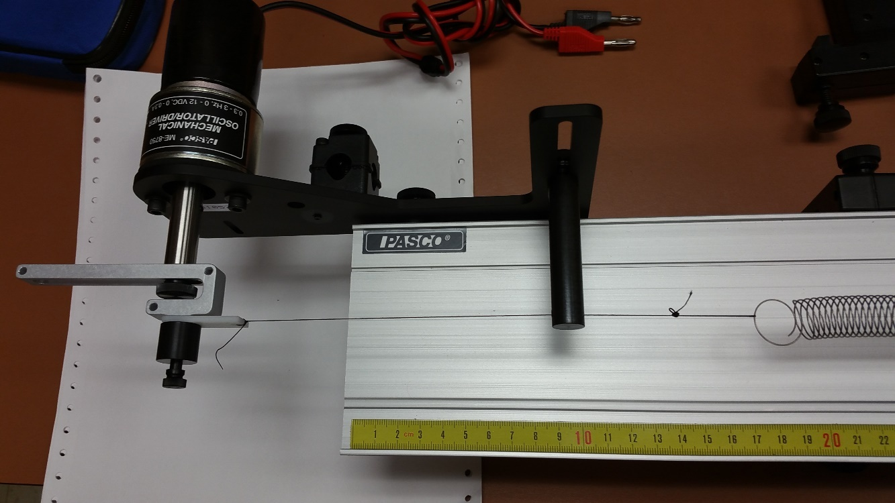
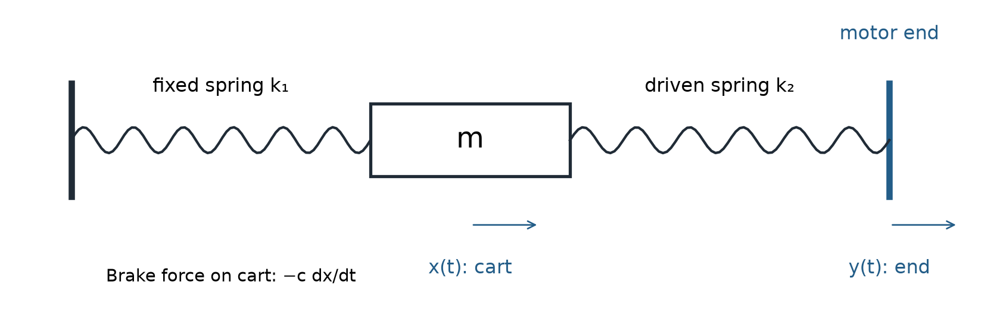

Fall 2026 · Laboratory 5
Forced vibration
Measure how a spring-mounted cart responds to impact and periodic motion. Identify drive speeds that amplify motion.
Engineering use
Motors and pumps repeatedly load their supports; precision machines must limit vibration during motion. This experiment connects measured mass, stiffness and damping to impact decay and resonance amplification.

Laboratory guide
Four-page procedure: setup, input calibration, impulse tests, harmonic sweep and report figures.
Pre-Lab 5
Run the supplied simulation and submit the requested figures and short explanations in one Word/PDF file before your own section.
Lecture 06 · Forced vibration
Applications, measured input/output, step-by-step derivation, transient versus steady response and the experiment.
MATLAB files
Unzip, open Run_Lab5_Forced_Response.m and click Run. Analyze impulse/decay or harmonic CSV/Excel data. Base MATLAB; no additional toolboxes.
Spring stiffness
Use your Lab 4 results for the same labeled springs, or calibrate them with the separate spring tool.
At the bench
- Measure: total moving mass, including hex rods and mounted dampers; stiffness of both labeled springs.
- Connect: Vernier Graphical Analysis → correct cart serial number → Position versus Time, meters, at most 25 Hz. Zero at equilibrium; collect before excitation.
- Impulse: remove magnetic dampers and record three short, separate taps with different strengths.
- Harmonic: mount 1–2 dampers and reweigh. Obtain matching damping from a free decay with the motor off. Measure endpoint travel, then sweep safe speeds below and above resonance.
- Save and check: one CSV per run, measured rpm, input travel and selected settled interval. Show an impulse plot/spectrum, a harmonic fit and at least five frequency-response points to the GTA.
What to compare

For mass m [kg], cart motion x [m], endpoint motion y [m], damping c [N·s/m] and spring stiffnesses k1, k2 [N/m], the model is mẍ + cẋ + (k1 + k2)x = k2y. Use the measured peak-amplitude ratio X/Y, with Y equal to half the endpoint peak-to-peak travel. Drive frequency is rpm/60 [Hz].
Report
Submit one combined Labs 4 + 5 report following the course template. Include the three impulse traces and spectra, a harmonic record identifying transient and settled motion, and measured frequency-response points overlaid on theory. Use your own mass, spring stiffnesses, input travel and matching damping. Export figures directly and discuss differences. See the guide for details and Canvas for the deadline.